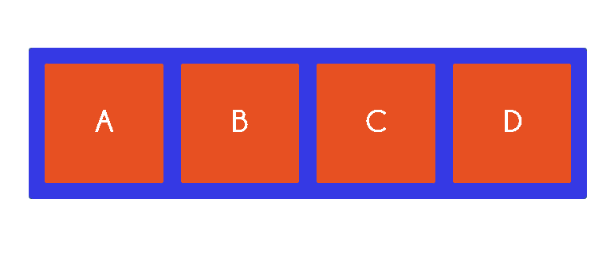
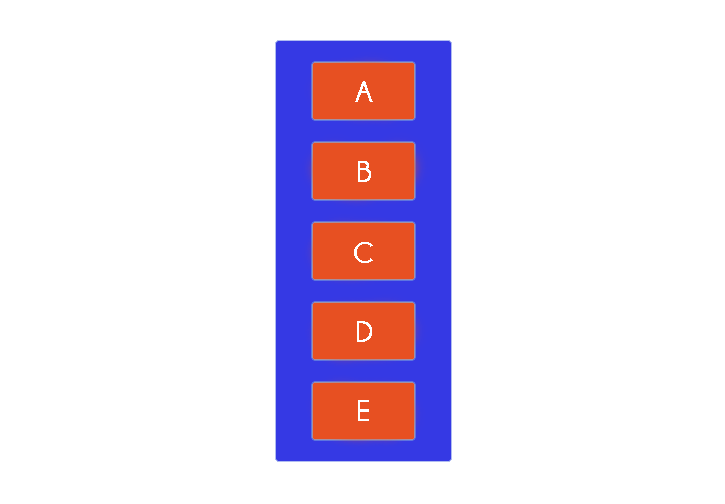
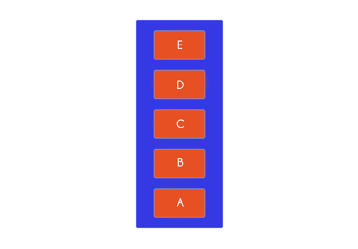
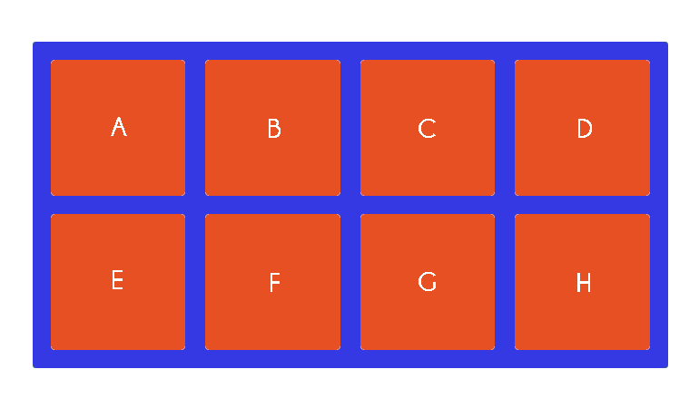
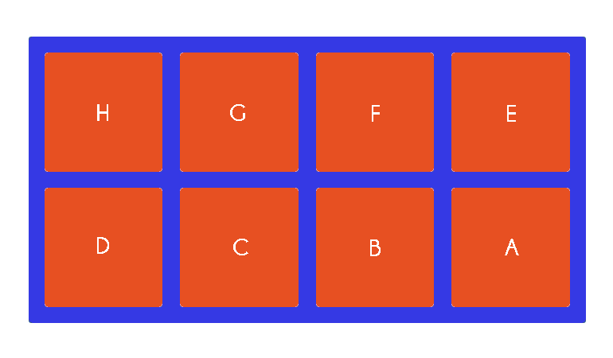
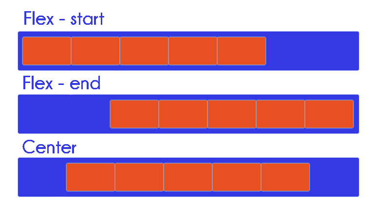
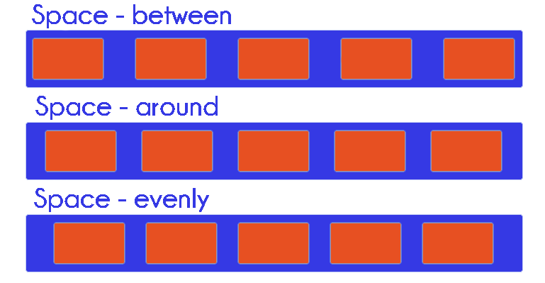
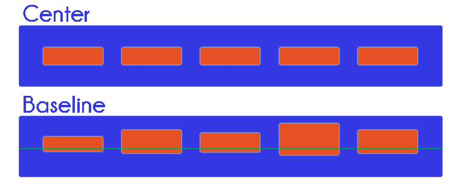
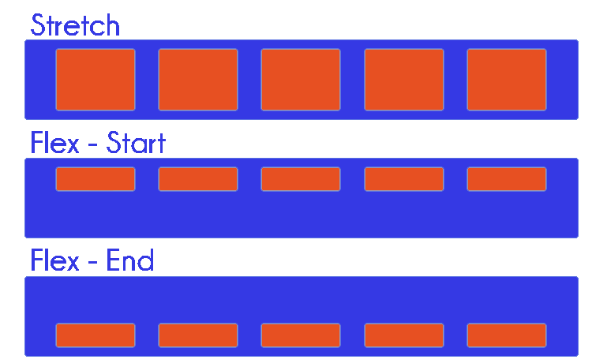
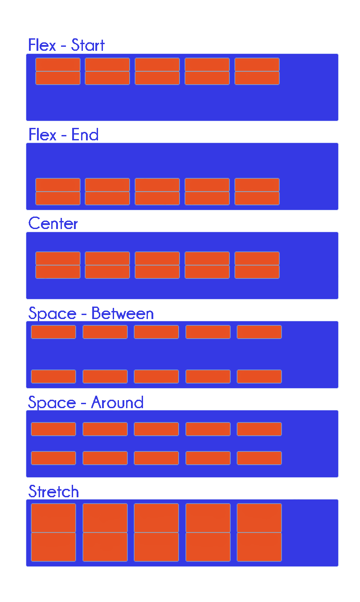

The Flexbox (Flexible Box) seeks to provide a much elaborate way to lay out, align and distribute space among items in a container or “box”, regardless of their sizes. Flex layout allows the container to alter its items’ width, height and order to best fill the available space which makes it easier to design a flexible and responsive layout structure.
display:flex;
Defines a flex container; inline or block depending on the given value. Direct child elements(s) of the flexible container automatically becomes flexible items.

Defines in which direction the container wants to stack the flex items.
flex-direction: row | row-reverse | column | column-reverse;
- Row (default value) stacks flex items horizontally, from left to right. 
- Row- reverse stacks flex items horizontally, from right to left.
- Column stacks flex items vertically, from top to bottom. 
- Column- reverse flex stacks items vertically, from bottom to top. 
flex- wrap: nowrap | wrap | wrap-reverse;
- Nowrap (default value) specifies that the flex items will not wrap.
- Wrap specifies that the flex items will wrap. 
- Wrap- reverse specifies that flex items will wrap in a reverse order. 
This is a shorthand property for flex- direction and flex-wrap properties.
flex- flow: row nowrap;
Specifies the alignment of the flex items.
justify- content: flex-start | flex-end | center | space- between
| space- around | space- evenly | stretch | start | end | left | right;
- Flex- start (default value) aligns flex items at the beginning of the container.
- Flex- end aligns flex items at the end of the container.
- Center aligns flex items at the center of the container. 
- Space- between aligns flex items with space between the lines.
- Space- around aligns flex items with even distribution of space around each of them.
- Space- evenly distributes items evenly with equal space around them. 
- Stretch distributes items evenly and stretches the auto-sized items to fit the container.
- start: items are packed toward the start of the writing-mode direction.
- end: items are packed toward the end of the writing-mode direction.
- left: items are packed toward the left edge of the container.
- right: items are packed toward the right edge of the container.
Other values:
Aligns flex items along the cross axis on the current line.
align-items: center | flex-start | flex-end | stretch | baseline;
- Center aligns flex items in the middle of the container.
- Baseline aligns flex items such as their baseline aligns. 
- Stretch (default value) stretches flex items to fill the container.
- Flex-start aligns flex items at the top of the container.
- Flex-end aligns flex items at the bottom of the container. 
Aligns a flex’s container lines. This has no effect when there is only one line of flex items.
align-content: flex-start | flex-end | center | space-between | space-around | space-evenly | stretch;
- Flex- start displays the flex lines at the start of the container.
- Flex- end displays the flex lines at the end of the container.
- Center places the flex lines in the middle of the container.
- Space- between displays the flex lines with equal space between them.
- Space- around displays evenly distributed items with equal space around each line.
- Stretch (default value) stretches the flex lines to take up the remaining space. 
Order property changes the order of the flex items. The order value must be a number.
order: 1; /* default value is 0 */
Specifies how much a flex item will grow relative to the other flex items.
flex-grow: 1; /* default value is 0 */
Specifies how much a flex item will shrink relative to the other flex items.
flex-shrink: 1; /* default value is 1 */
A shorthand property for the flex-grow, flex-shrink, and flex-basis properties.
flex: none |'flex-grow' 'flex-shrink' || 'flex-basis';
Specifies the alignment for the selected item inside the flexible container.
align-self: auto | flex-start | flex-end | center | baseline | stretch;